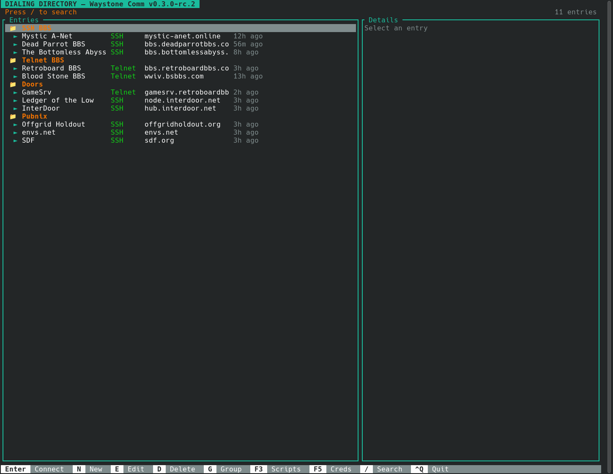

Connections
SSH, Telnet, Serial, and Raw TCP sessions with tabbed terminal workflows.
A keyboard-driven communications terminal for Linux.
Inspired by ProComm Plus and built for people who still connect to BBSes, door games, SSH hosts, Telnet systems, serial devices, and other remote terminal services.

SSH, Telnet, Serial, and Raw TCP sessions with tabbed terminal workflows.
CP437 BBS art rendering, xterm-style ANSI support, and stable 80-column BBS layouts.
Grouped entries, search, editing, credentials, emulation settings, and legacy SSH mode.
Zmodem upload and download workflows, plus tested X/Y/Zmodem transfer core code.
Encrypted password, token, and SSH key credentials with script access and log redaction.
Rhai entry scripts, script editor, login templates, session logs, history, and key maps.
Waystone Comm is looking for 3-5 experienced beta testers. The best testers actively use SSH, Telnet, ANSI BBSes, door games, and classic file transfers. The goal is real-world compatibility feedback, not a quick first-run impression.
Screenshots, transfer traces, and raw captures are especially useful for rendering and Zmodem bugs.
sudo apt-get install -y libssl-dev pkg-config libdbus-1-dev libudev-dev git clone https://github.com/njb1966/waystone-comm cd waystone-comm cargo build --release target/release/waystone-comm
Beta feedback, BBS compatibility hardening, transfer reliability, and documentation cleanup.
Packaging work, install/update documentation, and cleaner release automation.
Future handoff for Gemini, Gopher, Spartan, and web links, while Comm stays focused on terminal connections.